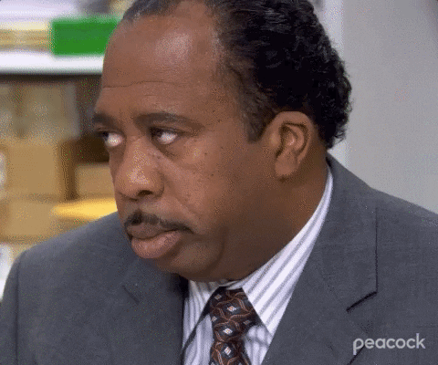

Stanley's Hudson Pretzel

Description
I wake up every morning in a bed that's too small, drive my daughter to a school that's too expensive,
and then I go to work to a job for which I get paid too little.
But on pretzel day? Well, I like pretzel day.
Ingredients
- 4 tbsp butter, melted
- 1 tbsp white sugar
- 2 tsp salt (you'll want more for topping!)
- 1 1/2 cups warm water (heat in the microwave for about 1 1/2 minutes)
- 1 pckg instant yeast
- 22 oz all-purpose flour (4.5 cups)
- Non-stick spray
- 10 cups water
- 2/3 cups baking soda
- 1 large egg yolk beaten + 1 tbsp water (for the egg wash)
- 2 tbsp unsalted butter
- 2 tbsp flour
- 1 cup beer (lager works best)
- 8 oz shredded cheddar
- 1/4 cup whole milk
- salt/pepper, to taste
- hot sauce to make it HOT (optional)
Preparation
- In a stand mixer, whisk together warm water, sugar, salt, and melted butter.
Add the yeast to the top of the mixture but do not mix.
Then, add all of the flour to your mixer. Using the dough hook, mix everything
on low until the dough begins to pull from the bowl. Once that starts,
turn the mixer to medium speed for 3-4 minutes. Finally, remove the dough from the mixing bowl,
spray the mixing bowl with nonstick spray and return the dough to the bowl, making sure
all sides of the dough have nonstick spray on them.
Cover tightly with plastic wrap and let rise for 45-50 minutes.
- Preheat oven to 450F and line large baking sheets with parchment paper.
In a large pot, bring your 10 cups of water to a boil. Once boiling, add baking soda.
- While you're waiting for your pot of water to boil, divide the dough into 8 equal
large pieces (or smaller if you want smaller pretzels!). Roll each dough ball into a
rope and then make your pretzel shape! Place the pretzels onto the parchment-lined baking sheets.
- Once the water is boiling, boil 1-2 pretzels at a time for 30 seconds.
Using a large slotted spoon or spatula, remove the pretzels from the pot and place
back onto the baking sheets. Once all pretzels have been boiled, brush with your
egg wash (egg yolk + water, whisked) + top with salt.
- Place the baking sheets into the oven for 12-14 minutes or until they're a golden brown
(smaller pretzels will need less time). Remove from the oven and let cool on a wire rack
for 5 minutes before serving. Top with more salt or whatever toppings you like ("The Works"
if you're Michael Scott).
- For the beer cheese: in a sauce pan, melt the butter over medium heat.
Whisk in the flour until the mixture clumps together. Add the milk, beer, and
the cheese, continuing to whisk. Lastly, add the salt, pepper, and optional hot sauce and
whisk it all in. Pour into a bowl and serve with your pretzels!
Back Home